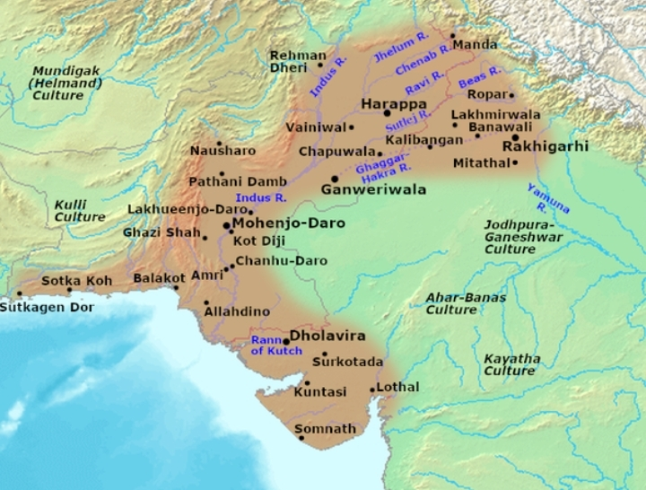

Introduction
The Indus Valley Civilization, also known as the Harappan Civilization, was one of the earliest urban civilizations in the world, flourishing in the Indus River Valley from 3300 BCE to 1300 BCE. It was characterized by its advanced urban planning, sophisticated drainage systems, standardized weights and measures, and a unique writing system that remains largely undeciphered.
Geography
The civilization spanned a vast geographical area, encompassing parts of modern-day Pakistan, India, and Afghanistan. It was centered around the Indus River and its tributaries, which provided fertile land for agriculture and access to trade routes.
Cities
The Indus Valley Civilization was known for its well-planned cities, such as Mohenjo-daro and Harappa. These cities were laid out on a grid system with wide streets, public squares, and elaborate drainage systems. The cities also featured fortified citadels, residential areas, and public buildings, including granaries, bathhouses, and temples.
Society
The Indus Valley Civilization was a complex society with a hierarchical structure. The ruling elite likely consisted of priests, merchants, and officials, while the majority of the population were farmers, artisans, and laborers. The society was organized around the concept of social harmony, and there is evidence of a strong emphasis on sanitation and public health.
Culture
The Indus Valley Civilization had a rich and unique culture, evidenced by its art, crafts, and religious beliefs. The civilization is known for its exquisite craftsmanship, particularly in pottery, jewelry, and seals. The seals often feature animals and mythical creatures, suggesting a strong connection to nature and the supernatural.
Decline
The Indus Valley Civilization began to decline around 1900 BCE, possibly due to a combination of factors, including climate change, environmental degradation, and invasion. The decline of the civilization led to the rise of new cultures and empires in the region.
Legacy
The Indus Valley Civilization has left a lasting legacy on the Indian subcontinent. Its innovations in urban planning, sanitation, and trade have influenced subsequent cultures and civilizations. The civilization's unique writing system, while largely undeciphered, continues to fascinate scholars and researchers.